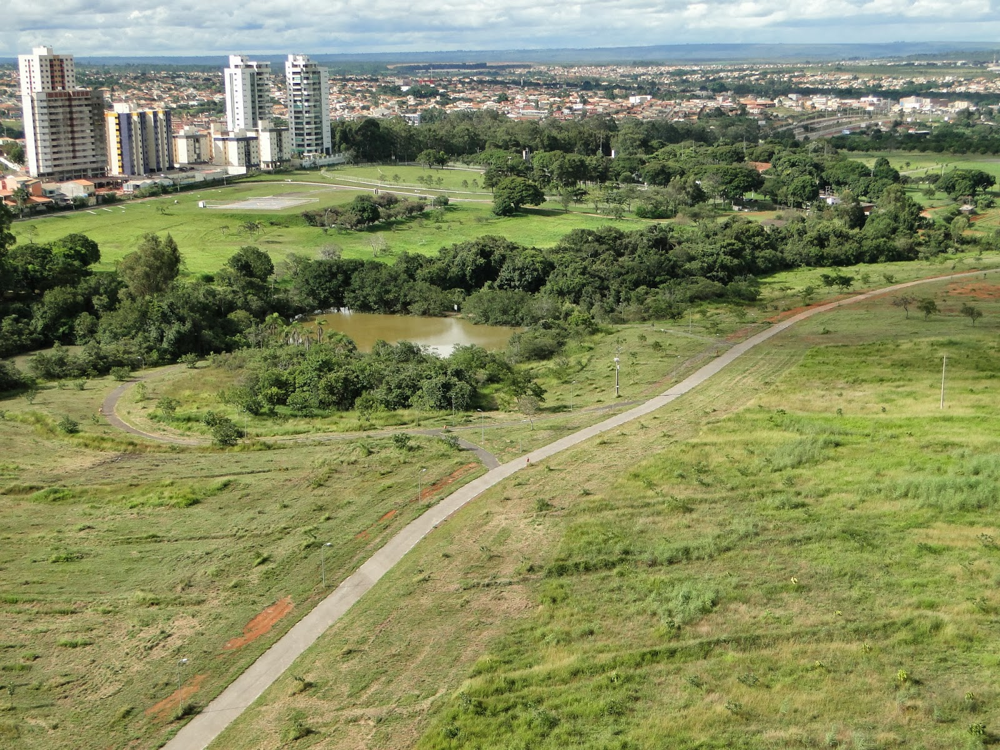

Apresentação
- O Parque Ecológico de Águas Claras é um verdadeiro refúgio verde em meio à urbanização de Brasília. Com uma área de preservação ambiental, o parque oferece aos visitantes a oportunidade de entrar em contato com a natureza, realizar atividades ao ar livre e apreciar a beleza da fauna e flora local.
Galeria de Fotos

Atrações
- Trilhas ecológicas
- Lagoa dos patos
- Mirante
- Áreas de piquenique
- Áreas de lazer, quadras
Atividades
- Caminhadas e trilhas: Explore a natureza e descubra a rica biodiversidade do parque.
- Pedalinhos: Alugue um pedalinho e faça um passeio pela Lagoa dos Patos.
- Observação de aves: Observe a variedade de aves que habitam o parque, como garças, patos e outros pássaros.
- Piqueniques: Aproveite os espaços destinados para piqueniques e desfrute de momentos relaxantes.
- Educação ambiental: O parque oferece atividades educativas para escolas e grupos, promovendo a conscientização sobre a importância da preservação ambiental.
Dicas
- Melhor época para visitar: Durante todo o ano, o parque oferece um clima agradável. No entanto, os períodos mais secos são ideais para atividades ao ar livre.
- O que levar: Água, protetor solar, repelente, chapéu, tênis confortáveis e câmera fotográfica.
- Alimentação: É permitido fazer piqueniques em áreas específicas.
Curiosidades
- O Parque Ecológico de Águas Claras foi criado com o objetivo de preservar a área verde e proporcionar um espaço de lazer para a população. A lagoa do parque é um importante ponto de encontro para diversas espécies de aves. O parque é um local ideal para a prática de atividades físicas ao ar livre.
Informações Práticas
- O parque está localizado na região administrativa de Águas Claras.
- Horário de Funcionamento: 6h - 22h
- Entrada: Gratuita
- Facilidades: Banheiros, áreas de piquenique, playgrounds
Como Chegar
- Para quem vai de carro, há estacionamento no local.
- Endereço: Endereço: Av. das Castanheiras, Águas Claras, Brasília - DF
- Transporte Público: Linhas de ônibus que cortam a cidade, no entanto, é sempre mais rápido e viável pegar o metrô. Desembarque nas estações Arniqueiras ou Águas Claras e caminhe por cerca de 500 metros.